Lavado y prueba de flujo del refrigerador de aceite del cambio
Los estudios GM indican que las tuberías y los refrigeradores de aceite del cambio obstruidos o limitados provocan una lubricación del cambio insuficiente y temperaturas de funcionamiento elevadas, lo que puede llevar a un fallo prematuro del cambio. Muchos casos de reparación reiterados podrían haberse evitado siguiendo los procedimientos publicados a continuación para la comprobación del flujo y limpieza del refrigerador de aceite del cambio. Este procedimiento incluye la comprobación del flujo y la limpieza del refrigerador del aceite del cambio auxiliar, si está disponible.
Nota: Utilice la herramienta de comprobación de flujo y limpieza DT-45096 o una equivalente para limpiar y comprobar el flujo del refrigerador del aceite del cambio y las tuberías del refrigerador de aceite una vez extraída la caja de cambios para su reparación.
Sólo deberá utilizarse aceite del cambio automático GM Goodwrench DEXRON®VI cuando se realice la reparación de un cambio GM.
El plazo de tiempo para la realización del procedimiento de limpieza y comprobación del flujo del refrigerador se incluye en los procesos de trabajo de la Guía de los tarifarios de trabajo desde el año de modelo 1987. Los pasos del procedimiento de servicio para la comprobación del flujo y la limpieza del refrigerador del aceite son los siguientes:
Pasos de limpieza y comprobación del flujo del refrigerador
- Rectificar la configuración
- Determinar el caudal mínimo
- Limpieza trasera
- Limpieza delantera
- Prueba de flujo
- Procedimiento de registro de códigos
- Limpieza
Herramientas especiales
| • | Herramienta de comprobación del flujo y limpieza del sistema de refrigeración del aceite del cambio DT-45096 |
| • | DT-45096-50 Adaptador de limpieza del refrigerador del cambio |
| • | Suministro de aire de taller con filtros de aceite/agua, regulador y manómetro -- 90 psi mínimo |
Si desea informarse sobre herramientas regionales equivalentes, consultar Herramientas especiales .
Rectificar la configuración
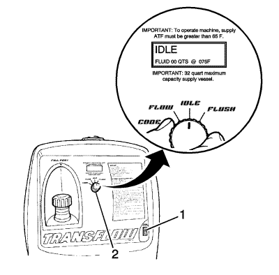
- Verifique que el interruptor de encendido (1) está en posición OFF.
- Coloque el interruptor de función principal (2) en posición IDLE (ralentí).
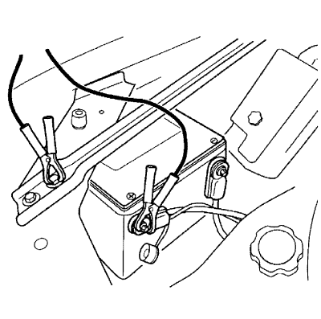
- Conecte la herramienta de comprobación del flujo y limpieza DT-45096 a la fuente de alimentación CC 12 V mediante la conexión del clip de batería rojo al terminal de batería positivo, +, del vehículo y conecte el polo negativo a una masa del chasis conocida.
- Gire el interruptor de encendido a la posición ON.
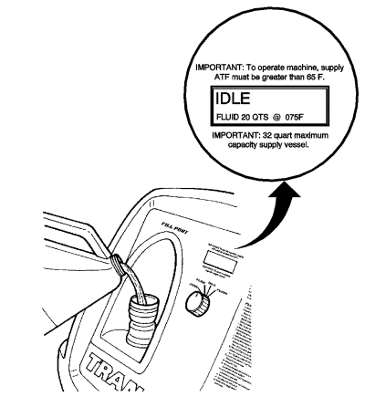
Atención: No llene el recipiente de suministro en exceso. Podría ocasionar daños a la unidad. Para verificar el nivel de líquido, observe la pantalla LCD mientras llena la unidad, para asegurarse de que el nivel del líquido no supera los 30 L (32 cuartos).
- Llene el depósito de suministro con Dexron®VI a través de la tubuladura de llenado.
- Vuelva a montar el tapón de llenado y apriételo.
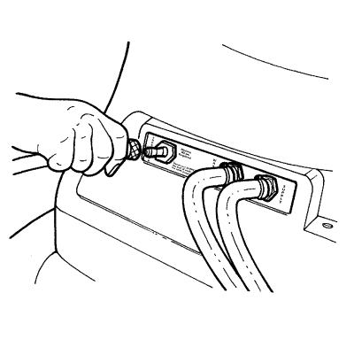
- Conecte un tubo flexible de alimentación de aire de taller a la desconexión rápida del panel trasero con la marca SUPPLY AIR (aire de alimentación).
Determinar el caudal mínimo
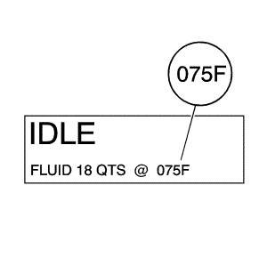
- Desde la pantalla de la máquina, identifique la temperatura del aceite del cambio automático almacenado en el recipiente de suministro de la herramienta de comprobación del flujo y limpieza DT-45096.
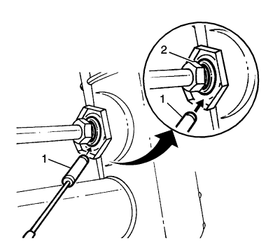
- Determine si el refrigerador del aceite del cambio es de acero o de aluminio utilizando un imán (1) en la brida (2) del radiador.
- Consulte la siguiente tabla. Utilizando la temperatura del paso 1, localice en la tabla Caudal MÍNIMO de acero, o bien en la tabla Caudal MÍNIMO de aluminio, el caudal mínimo en galones por minuto (gpm). Registre el canal mínimo en gpm y la temperatura del aceite de suministro para futuras consultas.
Ejemplo
| • | Temperatura del aceite: 75 °F |
| • | Tipo de refrigerador: Acero |
| | El caudal MÍNIMO para este ejemplo sería de 0,8 gpm. |
- Compruebe si existen daños o pliegues en las tuberías del refrigerador del aceite del cambio que podrían provocar un flujo de aceite limitado. Repare según convenga y consulte los procedimientos manuales de servicio GM apropiados.
Caudal mínimo en galones por minuto (gpm)
Rango de temperatura
| Acero
| Aluminio
|
65 - 66 °F
| 0,6 gpm
| 0,5 gpm
|
67 - 70 °F
| 0,7 gpm
| 0,6 gpm
|
71 - 75 °F
| 0,8 gpm
| 0,7 gpm
|
76 - 80 °F
| 0,9 gpm
| 0,8 gpm
|
81 - 84 °F
| 1,0 gpm
| 0,9 gpm
|
85 - 89 °F
| 1,1 gpm
| 1,0 gpm
|
90 - 94 °F
| 1,2 gpm
| 1,1 gpm
|
95 - 98 °F
| 1,3 gpm
| 1,2 gpm
|
99 - 103 °F
| 1,4 gpm
| 1,3 gpm
|
104 - 108 °F
| 1,5 gpm
| 1,4 gpm
|
109 - 112 °F
| 1,6 gpm
| 1,5 gpm
|
113 - 117 °F
| 1,7 gpm
| 1,6 gpm
|
118 - 120 °F
| 1,8 gpm
| 1,7 gpm
|
Procedimiento de limpieza trasera
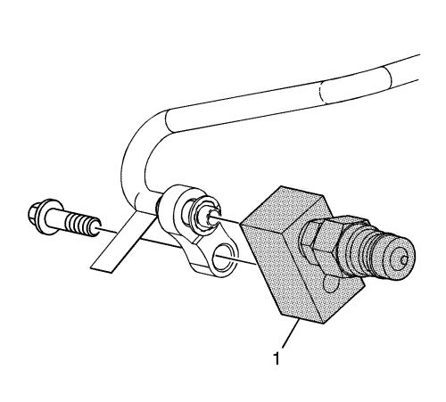
- Conecte el adaptador de limpieza del refrigerante DT-45096-50 (1) a la alimentación del refrigerante del aceite del cambio del vehículo y vuelva a colocar las tuberías del cambio.
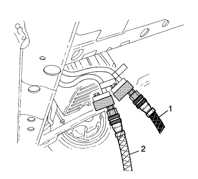
- Conecte el tubo flexible de alimentación negro (1) a la tubería de retorno, el conector superior del cambio, y el tubo flexible de eliminación de deshechos (2) de la tubería de alimentación, el conector inferior del cambio, a las tuberías del refrigerador del vehículo. Ésta es la dirección de reflujo - flujo inverso.
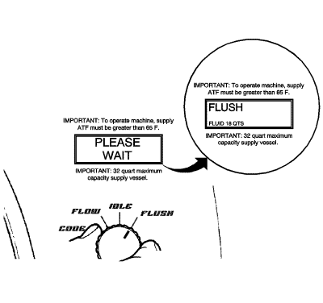
- Gire el interruptor de función principal a la posición FLUSH (limpieza). Deje funcionar la máquina durante 30 segundos.
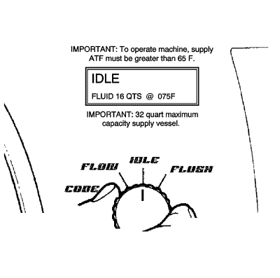
- Gire el interruptor de función principal a la posición IDLE (ralentí) y deje que desaparezca la presión del recipiente de suministro.
Limpieza delantera
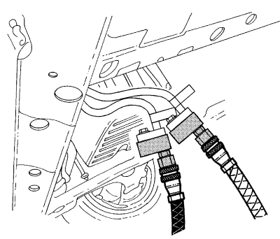
- Desconecte los tubos flexibles de deshecho y alimentación de las tuberías del refrigerador del vehículo. Invierta los tubos flexibles de deshecho y alimentación para proporcionar una dirección de flujo normal.
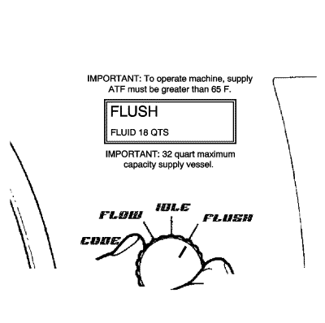
- Gire el interruptor de función principal a la posición FLUSH (limpieza) y deje que la máquina funcione durante 30 segundos.
Prueba de flujo
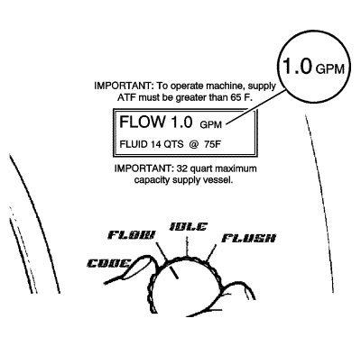
Nota: Si el caudal es inferior a 0,5 gpm, el LCD mostrará un mensaje de error. Consulte la sección Localización de fallos del manual de trabajo.
- Gire el interruptor de función principal a la posición FLOW (flujo) y deje que el aceite fluya durante 15 segundos. Observe y anote el caudal; éste es el caudal PROBADO.
- Compare el caudal PROBADO con la información de caudal MÍNIMO registrado anteriormente.
| • | Si el caudal PROBADO es igual o superior al caudal MÍNIMO registrado, el sistema de refrigeración de aceite está funcionando correctamente. Realice el procedimiento de registro de códigos. |
| • | Si el caudal PROBADO es inferior al caudal MÍNIMO registrado anteriormente, repita los procedimientos de limpieza trasera y delantera. |
- Si el caudal PROBADO es inferior al caudal MÍNIMO después de la segunda prueba, realice el Procedimiento de registro de códigos.
| 3.1. | Sustituya el refrigerador del aceite del cambio. |
| 3.2. | Vuelva a conectar los tubos flexibles de deshecho y alimentación a las tuberías del refrigerador en la dirección de flujo normal. Realice una prueba de flujo. |
| 3.3. | Realice el procedimiento de registro de códigos. |
Procedimiento de registro de códigos
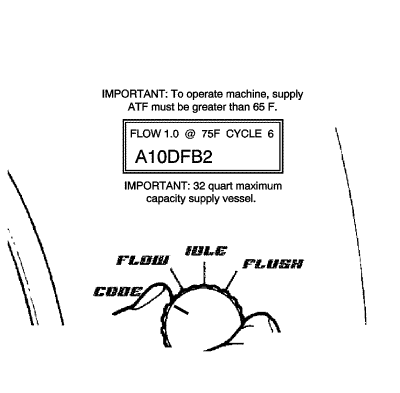
- Gire el interruptor de función principal a la posición CODE (código).
Nota:
| • | Si se interrumpe la alimentación antes de registrar el código de siete caracteres, éste se perderá y la prueba de flujo tendrá que repetirse. |
| • | La prueba de flujo debe ejecutarse durante un mínimo de 8-10 segundos y estar a más de 0,5 gpm para que se genere un código. |
- Registre la información del código de flujo de siete caracteres, el ciclo, la temperatura y el caudal PROBADO en la orden de reparación.
Limpieza
- Gire el interruptor de función principal (2) a la posición IDLE (ralentí) y deje que desaparezca la presión del recipiente de suministro.
- Gire el interruptor de encendido (1) a la posición OFF (desactivado).
Nota: Puede que salga una pequeña cantidad de agua de la parte inferior de la unidad cuando el suministro de aire se desconecte. Esto es un funcionamiento normal del separador de agua incorporado.
- Desconecte los tubos flexibles de deshecho y alimentación y la fuente de alimentación de 12 voltios del vehículo.
- Desconecte el tubo flexible de suministro de aire de la herramienta de comprobación del flujo y limpieza DT-45096.
- Deseche el ATF de deshecho de acuerdo con todos los requisitos locales, estatales y federales aplicables.
| © Copyright Chevrolet. Reservados todos los derechos |